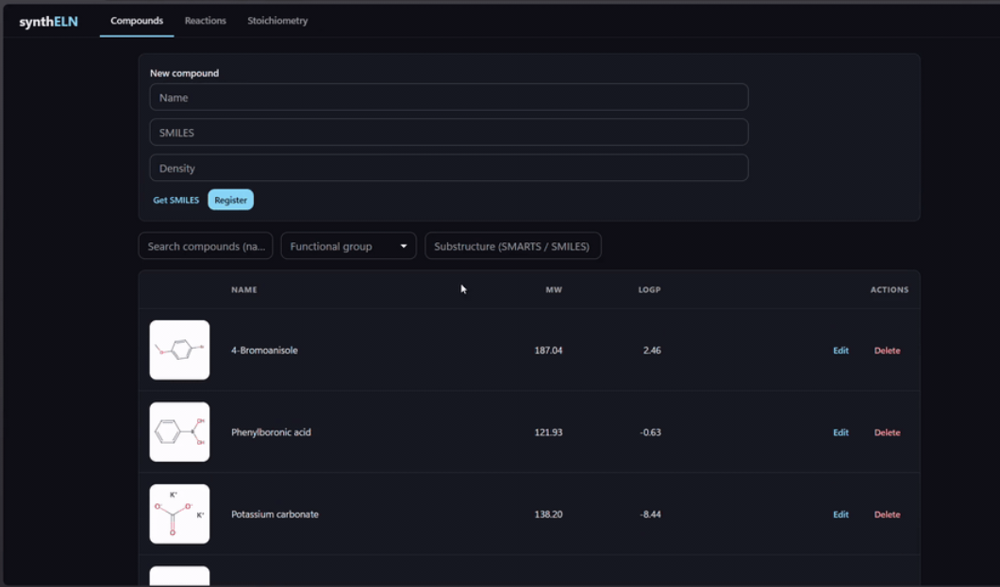

電子実験ノート（ELN）
個人開発 / 2026〜化学反応の記録・管理のための電子実験ノート（ELN: Electronic Lab Notebook）です。化合物を SMILES 記法で入力すると、RDKit が分子量・LogP・InChIKey などの物性値を自動で計算し、PostgreSQL に保存します。保存したデータは FastAPI を通じて React の画面に表示されます。
ケモインフォマティクスとWebアプリ開発を実践で身につけるため、データベース設計から API の実装、化学計算、フロントエンドまでをすべて自作しています。
Python
FastAPI
PostgreSQL
React
RDKit